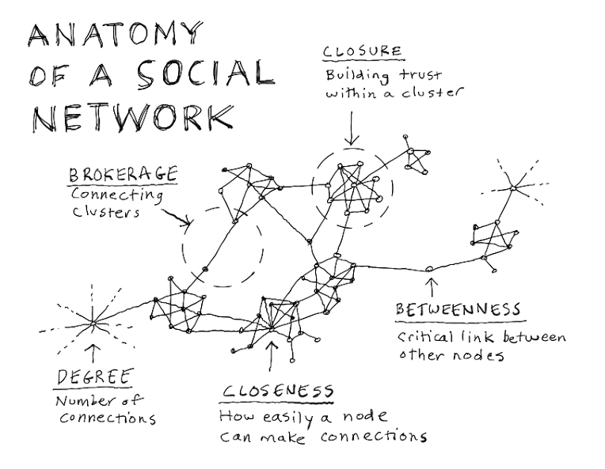
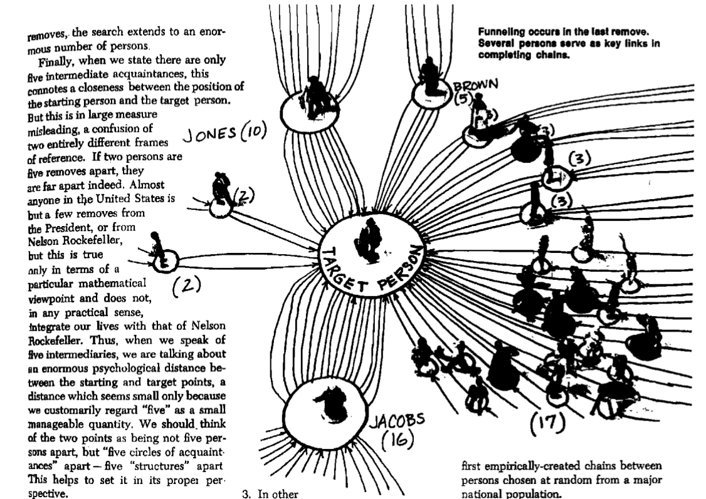
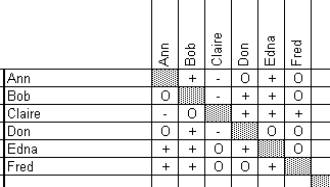
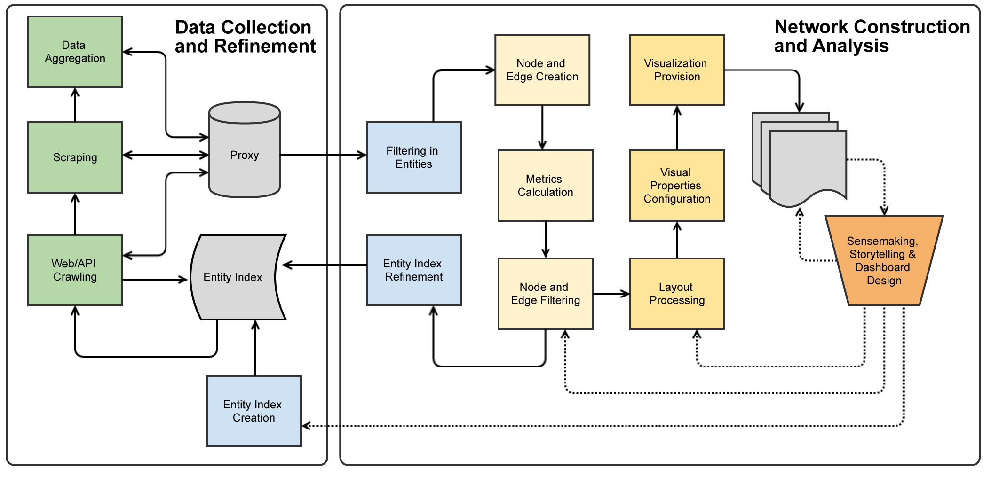

Introduction to Data-Driven Network Analytics (with Gephi)
Freie Universität Berlin 2017
Based on a presentation at Workshop on Big Social Data Analytics held at CBS in Copenhagen in October 2015.
Principle

Image Source: Anatomy of a social network (Gray 2012)
History: Six Handshakes
Milgram's (1967) experiments gave firm evidence on the existence of a small-world: "the diameter of the world" is roughly six handshakes.

Key result: Scale Free networks
Barabási and Bonabeau (2003) presented the principle of scale-free networks and the reason for their existence: preferential attachment process

Image Source: Scale-Free Networks (Barabási and Bonabeau, 2003)
Example: Finnish Innovation Ecosystem
Finnish Innovation Ecosystem (Still et al., 2013)
Part 1: Collecting data
The objective is to put together a sociomatrix

Image source: Hoffman (2000): Introduction to Sociometry
Sociomatrix is the matrix representation of a sociogram. (Moreno (1934) may have used the latter in a slightly different meaning.)
Sociomatrix enumerates the individual connections between actors. Matrix representation allows for different kinds of computations, cf. Miilumäki (2011).
In practice connections are simply enumerated one by one
| Source | Target | Type | Id | Label | Weight |
| 26 | 11 | Directed | 55 | 31 | |
| 55 | 26 | Directed | 131 | 21 | |
| 55 | 11 | Directed | 132 | 19 | |
| 27 | 11 | Directed | 58 | 17 | |
| 62 | 58 | Directed | 161 | 17 | |
| 59 | 58 | Directed | 147 | 15 | |
| 25 | 24 | Directed | 51 | 13 | |
| 62 | 59 | Directed | 162 | 13 | |
| 25 | 11 | Directed | 53 | 12 | |
| 55 | 49 | Directed | 128 | 12 | |
| 64 | 62 | Directed | 177 | 12 |
. . .
Network representation of the previous: Les Miserables

To data upstream: Twitter
Vastaan maanantaina Seinäjoen yliopistokeskuksessa kysymykseen "Kuinka tehdään #verkostotutkimus:ta?" #verkostoanalyysi
— Jukka Huhtamäki (@jnkka) May 23, 2019
Tutkijatapaamiset ovat avoimia tilaisuuksia. Tervetuloa tutkijahotellin väki, muut tutkijat ja tutkimuksesta kiinnostuneet!https://t.co/EBZU0LDC1M
Additional data: boundary resources
For a more complex example, we can use boundary resource data
Programmable Web data is an example of data that can be collected by crawling and scraping
Related research: Weiss & Gangadharan (2010), Evans & Basole (2016), Basole (2016), Huhtamäki et al. (2017), Basole (2018)
Part 2: From data to network
Choices on network structure
- Which entities nodes represent?
- On what basis are nodes connected to each other?
- One, two or multimode network?
- Directed or undirected?
- Dichotomous vai weighed connections?
- Static or dynamic (temporal)?
Examples help here.
Mystery networks
Two "mystery networks" are available for analysis:
Can you make sense on what the two networks might represent?
What were the most useful means to arrive to the final conlusion?
From tweets to a network
Let's decompose an example tweet into network data:
Käytössä @Gephi, @ThePSF & #ostinatomodel. Lue taustaksi @otteitaverkosta-kirjan luku #verkostoanalyysi:stä /cc @jattipaa
— Jukka Huhtamäki (@jnkka) May 23, 2019
- Nodes? Edges?
- One, two, multimode?
- Directed or undirected?
- Dichotomous or weighed?
- Which criteria one should apply to make the decisions?
Part 3: Network layout
Force-driven layout
Layout refers to the act of placing the nodes on canvas
Force-driven layot is a straighforward option:
- Nodes repel each other
- Connections act as springs pulling the nodes back together
- The center of a gravitational field is placed in the middle of the canvas
- The process is run and configured in iteration until the visualizer is happy with the result
ForceAtlas2 is an example of force-driven layout algorithm
Network metrics
- Degree: number of connections
- Outdegree: number of connections away from a node
- Indegree: number of connections toward a node
- Betweenness centrality: shortest paths through a node
- Authority: PageRank, HITS, ...
- Clustering coefficient, closure, ...
The Ostinato Model

Huhtamäki, J., Russell, M. G., Rubens, N., & Still, K. (2015). Ostinato: The exploration-automation cycle of user-centric, process-automated data-driven visual network analytics. In E. Bertino, S. Matei, & M. G. Russell (Eds.), Transparency in Social Media: Tools, Methods and Algorithms for Mediating Online Interactions. Springer.